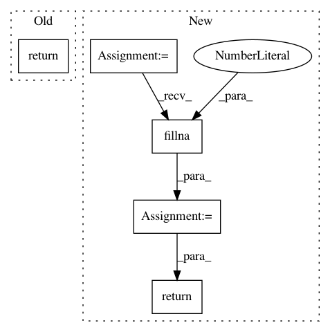

2c16357cf3b2a5b1265caf7d89703ef253e39df3,nilmtk/stats/electricity/single.py,,missing_samples_per_period,#Any#Any#Any#Any#Any#,239
Before Change
window_start, window_end)
series = pd.Series(1, index=missing_samples)
return series.resample(rule=rule, how="sum")
def hours_on(series, on_power_threshold=DEFAULT_ON_POWER_THRESHOLD,
max_sample_period=None):
After Change
" sample period!")
index = _get_index(data)
index = reframe_index(index, window_start, window_end)
n_samples_per_period = (pd.Series(1, index=index)
.resample(rule=rule, how="sum")
.fillna(0))
dropout_rate_per_period = 1 - (n_samples_per_period /
n_expected_samples_per_period)
return dropout_rate_per_period
def hours_on(series, on_power_threshold=DEFAULT_ON_POWER_THRESHOLD,
max_sample_period=None):
In pattern: SUPERPATTERN
Frequency: 3
Non-data size: 5
Instances
Project Name: nilmtk/nilmtk
Commit Name: 2c16357cf3b2a5b1265caf7d89703ef253e39df3
Time: 2014-01-07
Author: jack-list@xlk.org.uk
File Name: nilmtk/stats/electricity/single.py
Class Name:
Method Name: missing_samples_per_period
Project Name: etal/cnvkit
Commit Name: 03cd68309bcb94d8bd760621998cfc851a683fac
Time: 2016-09-01
Author: eric.talevich@gmail.com
File Name: cnvlib/segfilters.py
Class Name:
Method Name: ampdel
Project Name: instacart/lore
Commit Name: b305569ef7f192b237559a527cd2a9f82901c59d
Time: 2018-04-02
Author: montana@instacart.com
File Name: lore/transformers.py
Class Name: LogPlusOne
Method Name: transform